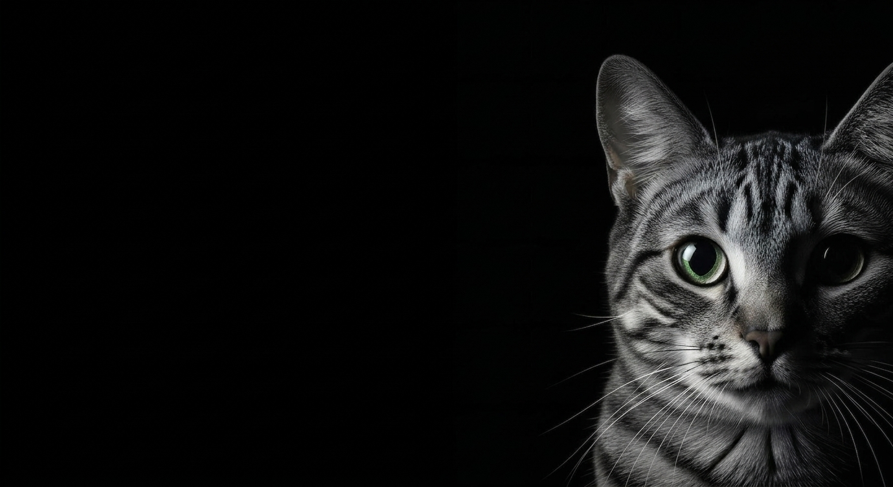

PRECISIÓN EN EL
CUIDADO ANIMAL

QUÉ HACEMOS
En Vetopia ofrecemos una atención integral y de vanguardia para tu mascota: hospitalización con monitoreo constante 24/7 en instalaciones de última generación, planes de tratamiento personalizados basados en perfiles genéticos y biométricos precisos, y acceso instantáneo a los signos vitales y al progreso de tu mascota a través de nuestra plataforma digital integrada.
NUESTRO EQUIPO

Dra. Laura Gómez
Medicina Veterinaria

Dr. Carlos Ruiz
Veterinario Cirujano

Dra. Felipe Torres
Cardiología veterinaria

Dr. Jorge Méndez
Dermatología veterinaria

Dra. Sofía Herrera
Nutrición veterinaria
CÓMO FUNCIONA
El proceso en Vetopia es simple y transparente: registras a tu mascota en nuestra plataforma digital, donde se crea su perfil biométrico de forma ágil y segura.
Nuestro equipo realiza un diagnóstico integral con escaneo y laboratorio in situ, diseña un tratamiento personalizado con base en su perfil genético y da seguimiento continuo durante la recuperación.
Todo con monitoreo 24/7 en instalaciones de última generación y acceso en tiempo real a los signos vitales y al progreso de tu mascota desde cualquier dispositivo.
DÓNDE UBICARNOS
Visítanos en nuestras instalaciones de última generación, pensadas para el bienestar y la recuperación de tu mascota. Encuéntranos en Ak 7 #40 - 62, Bogotá D.C., Colombia.